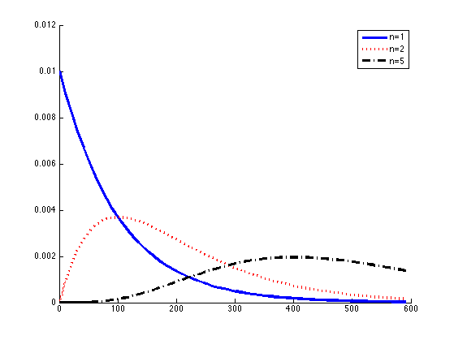

HMM Self Loop
Ls = 1:10:600;
ns = [1, 2, 5];
p = 0.99;
figure; hold on;
[styles, colors, symbols] = plotColors;
logp = log(p); logq = log(1-p);
legendstr = cell(length(ns), 1);
h = zeros(length(ns), 1);
for i=1:length(ns)
n = ns(i);
ps = zeros(1,length(Ls));
for j=1:length(Ls)
L=Ls(j);
if L >= n
ps(j) = exp(nchoosekln(L-1,n-1) + (L-n)*logp + n*logq);
end
end
h(i)= plot(Ls, ps, [styles{i}, colors(i)], 'linewidth', 3);
legendstr{i} = sprintf('n=%d', n);
end
legend(h,legendstr);
printPmtkFigure('hmmSelfLoopDist');
